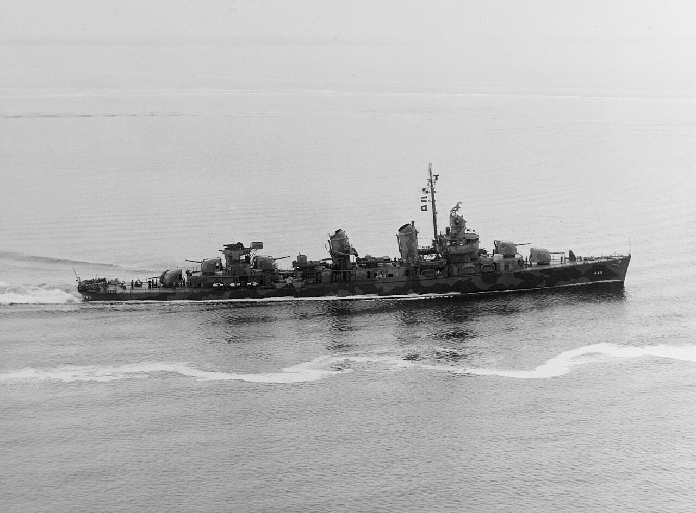

USS Fletcher (DD-445)
Buque líder de la clase Fletcher, la serie de destructores más producida en la historia de la US Navy con 175 unidades.

Cabeza de clase
El DD-445 entró en servicio en junio de 1942. Dio nombre a una clase de 175 destructores.
Servicio de guerra
Operó en el Pacífico, incluidos los combates relacionados con Guadalcanal. El archivo vincula su ficha con la campaña para ampliar ese contexto.
Servicio posterior
Su carrera incluyó servicio como DDE-445. Fue retirado en agosto de 1969 y vendido para desguace en febrero de 1972.
Un destructor de empleo múltiple
El Fletcher debía combinar protección de fuerzas mayores, ataque con torpedos, defensa antiaérea y tareas de patrulla. Esas funciones exigían armamento diverso y una organización capaz de reaccionar a amenazas diferentes. En las aguas de Guadalcanal, las misiones de escolta y el combate nocturno hicieron del destructor un elemento esencial del dispositivo naval.
Evolución a lo largo del servicio
Un buque con una carrera prolongada no conserva necesariamente su configuración inicial. Los equipos de detección y las capacidades antisubmarinas cambiaron durante el servicio del Fletcher. Las fotografías de 1942, 1943 y la década de 1960 permiten observar etapas distintas; las cifras de la ficha deben consultarse con la fecha y las condiciones de configuración que las acompañan.